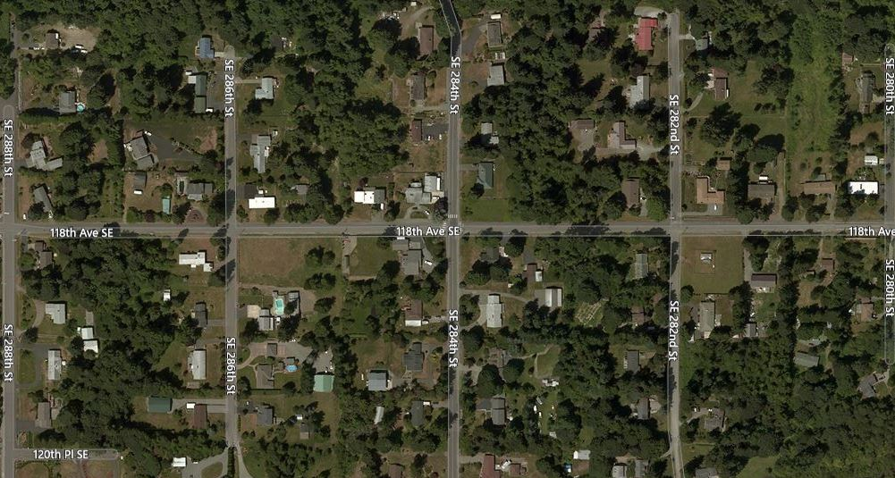
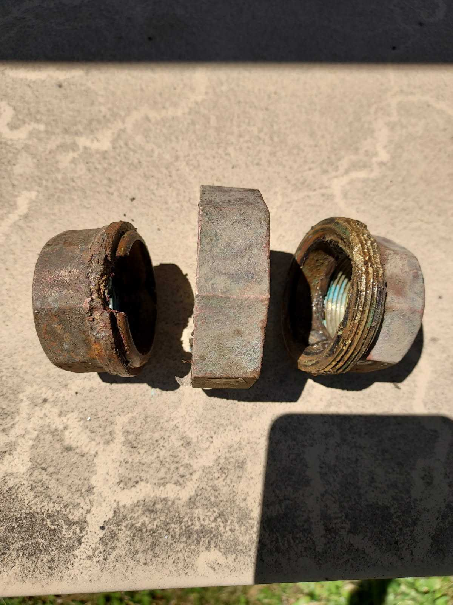
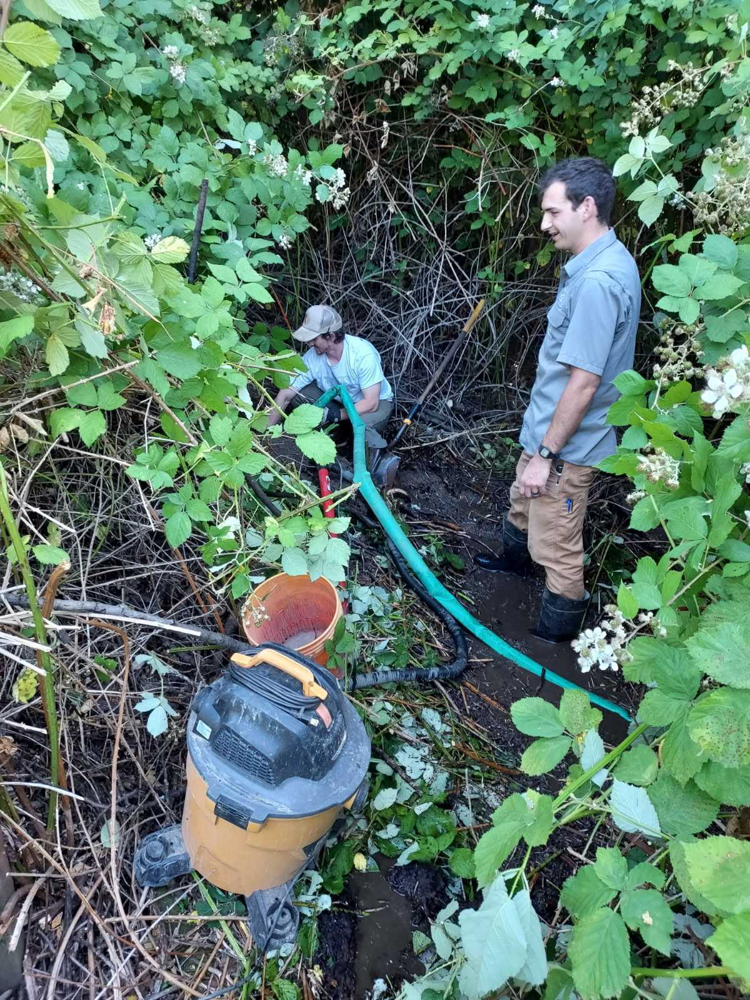
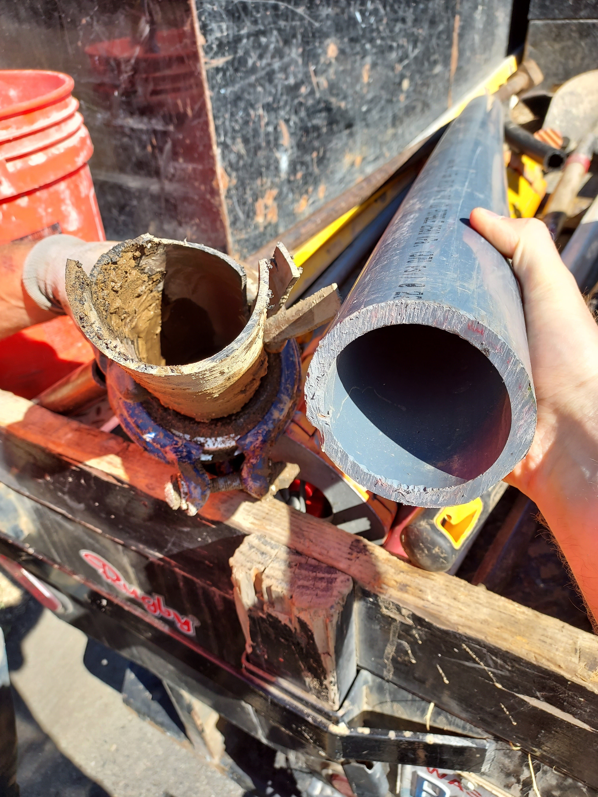

Current Weather
in Auburn, WA
|
Current: |
|
32°F |
Partly Cloudy |
|
Wind |
Wind Chill |
Humidity |
|
20 mph |
N/A |
20 % |
3 Day Forecast
|
Day 1 |
0°F |
Cloudy |
|
|
Day 2 |
0°F |
Cloudy |
|
|
Day 3 |
0°F |
Cloudy |
News
About The Derbyshire Scenic Acres Water Association
Our water district was founded in unincorporated King County in 1960, the nearest city being Kent. Nearly all of the system was annexed into Auburn in 2008. We currently serve 59 homes in the neighborhood, stretching 4 houses east and west of 118th Ave from SE 280th St to SE 288th St. Bylaws restrict service to 1 service-line hookup per lot.
The well and pumphouse is located on the corner of 118th Ave and SE 282nd, and contains our water treatment system and a diesel generator which kicks on automatically in the event of a power outage.
Our water is tested weekly. Water quality reports are done on a regular basis and sent to residents annually. Reach out to the Secretary if you did not receive one.
As of 2024 we are in the process of a complete upgrade to the overall water distribution system, for the first time in over 60 years. This is designed to improve service reliability and quality.
Recent water system updates
-
Starting July 3rd, we started to have low water pressure in the system. Nothing at the pump house appeared
to be wrong. Over the next couple days, we continued to have low pressure, and the reservior was
found to be low. We called Northwest Water Service (NWS) out to help 2 leaks that were identified. The first
was a small leak on a lateral line between two homes on the west end of 282nd st. The second leak was large. While
nearly all of our lines run in the right of way next to the streets, we do have one line that was put along a
back fence line at the north edge of the system. Currently that area is covered with blackberries, so it
can be difficult to know if we have a leak in that line.
We did indeed have a break back there, a union had been eroded over time by a small leak, and now it was leaking a lot. You can see the union and the blackberries covering this area below.


- July 9,10: We've been having problems with our chlorine pump; it stopped adding chlorine. NWS was out for a couple days, and was able to rebuild the pump. So Chlorine levels are back to normal.
Main replacement project status
Association Board approved three motions this last year. The first was to request a loan from the State of Washington through the Perpetual Water fund to fund Northwest Water Services to create a plan to replace our aging water system. The reasons are two fold:
Breaks are more frequent and more expensive
First, we have many more breaks in the system than we previously did, and the materials that were using in the 1950' to build the system are not up to the standards of today.
Water Loss
The second reason is that we lose about 30% of the water that we pump from the ground through leaks in the system, which is wasteful, costs us extra electricity to pump, and is not in compliance with state standards.
The project plan has been completed, and we are in the process of getting bids from companies at this time.
Project Plan Funding
The second motion that was passed was to pursue a State of Washington Perpetual Water Fund low interest loan. We received a loan last year to fund the project plan, and the loan would allow us to fund the replacement system. The loan application should be submitted in October 2024.
Federal Grant identification and application
The third motion was to fund the pursuit of federal grants to cover some of the cost of the replacement. We have been working with a grant writing company who specializes in identifying and preparing the grant submission paperwork. We are in the process of applying for a grant that would cover up to 50% of the cost. Current costs are estimated to be over $1,000,000, so we are hopeful that a grant is approved. The grant application will be submitted prior to Oct 7, 2024.
Status 7/11/2025
All government grants were put on hold at the beginning of the year, so we were not able to secure a grant. Our loan was not approved by the State of Washington. The board is looking at alternative plans to be able to do the project incrementally.